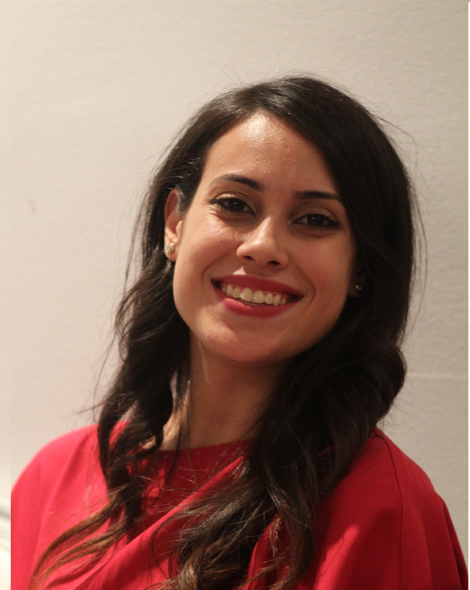

Anissa Fourati

Information
25 years old Driver's licence Adresse: Tunis les berges du lac II
Contact
Phone:
+54242521
Email:
anissa.fourati@gmail.com
IT skills
SAP
Internet communication
Object-oriented programming
Database management
Project management
Data warehouse and datamining
Language
English:
French:
Arabic:
Education
Bachelor of Business Administration |
Tunis Business School
:
Major : Finance
Minor : Information Technology
Baccalaureat in Mathematics |
High School Menzah 9
Experience
Business analyst at Vermeg wealth and asset management
Treasury Assistant at « International Organisation for Migration » IOM-Libya’s mission in Tunis :
Responsable of the Cash Management at the organisation
Responsable of the payment processing locally and abroad
Establishes and maintains effective working relationships with suppliers in Tunisia and Libya
Logistics Assistant intern at « Save the Children »
Organisation of trainings
Providing office supplies
Preparing contracts and purchase orders for suppliers
Summer internship at MAC sa intermédiaire en bourse
Understanding of the market
the role of stock market intermediary
Summer internship at Cabinet d'expertise CFN
Collecting and organizing contracts of clients
Summer internship at AIESEC Ankara,Turkey
Teaching english to turkish students
Extracuricular activities
President at Rotaract Tunis Business School
Team management
Organization of humanitarian, professional and international events
Collaboration with other Rotaract and Rotary clubs
Co-founder vice president at Rotract Tunis Business School
Fondation of a new club Rotaract
Team management
leadership skills
Comittee Organizer at AIESEC Bardo
Organizing the 30Th anniversary of the organization
Manager at financial department of AIESEC Bardo
Manage financial transactions for interns
Member at Rotaract les berges du lac